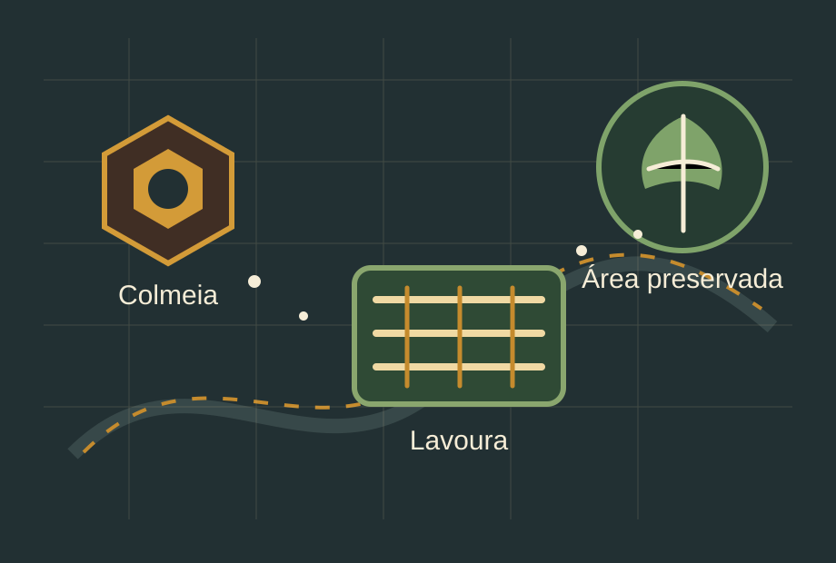

Propriedade integrada em equilíbrio
Com colmeias, flores, lavoura, água limpa, mata nativa, biodiversidade e participação da comunidade, a propriedade ganha estabilidade ambiental e produtiva.

Painel interativo sobre abelhas, produção agrícola e preservação ambiental
A apicultura integrada à agricultura mostra que produzir e preservar não precisam ser caminhos opostos. Quando abelhas, lavouras e áreas naturais convivem em equilíbrio, a produção se fortalece e o ambiente também.
Monte uma propriedade rural viva tocando nos elementos do ambiente. Cada escolha altera as conexões entre colmeias, flores, lavoura, água, mata nativa, biodiversidade e comunidade.
Com colmeias, flores, lavoura, água limpa, mata nativa, biodiversidade e participação da comunidade, a propriedade ganha estabilidade ambiental e produtiva.
As abelhas contribuem para a polinização de diversas plantas, ajudando na reprodução vegetal, na biodiversidade e na produção de alimentos. Na agricultura, a presença de polinizadores pode melhorar a formação de frutos, sementes e a qualidade de alguns cultivos.
A apicultura integrada acontece quando a criação de abelhas é pensada junto com a produção agrícola e a preservação ambiental. Isso envolve instalação responsável de colmeias, cuidado com o uso de defensivos, manutenção de áreas floridas, proteção de nascentes, preservação de mata nativa e diálogo entre agricultores e apicultores.
Estudar polinização, criar jardim de flores, observar insetos polinizadores e desenvolver campanhas educativas.
Planejar manejo, proteger água e solo, preservar floradas e integrar apicultura à produção.
Valorizar mel e alimentos locais, evitar queimadas, proteger áreas verdes e apoiar práticas sustentáveis.
Integrar apicultura, agricultura e preservação é reconhecer que a produção depende da vida ao redor. Abelhas, plantas, água, solo e pessoas fazem parte de um mesmo sistema. Quando esse sistema é cuidado, o alimento, a biodiversidade e o futuro se fortalecem juntos.
Voltar ao ecossistema